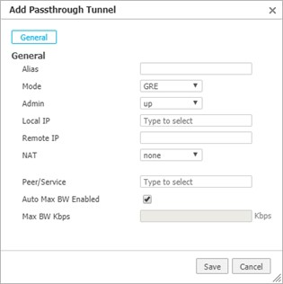
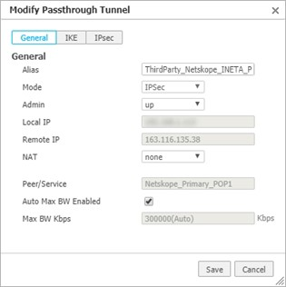
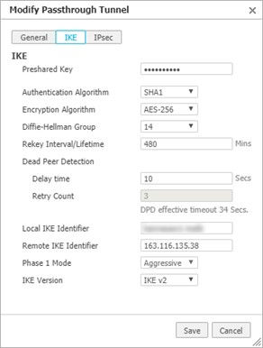
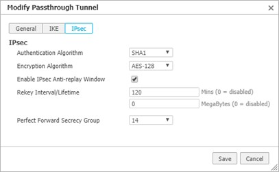

Configure Tunnels on EdgeConnect
Follow the steps below to configure IPsec tunnels. You will need to create an IPsec VPN tunnel to the primary POP and an IPsec VPN tunnel to the failover POP.
Log in to Silver Peak Unity Orchestrator.
In the device tree on the left, select the EdgeConnect appliance where you want to configure the tunnel to Netskope.
Open the Tunnels tab (click Configuration > Networking > Tunnels > Tunnels).
Click the edit icon on the left of any row in the table.
On the tunnels detail page, click Passthrough at the top of the table, and then click Add Tunnel.
The Add Passthrough Tunnel dialog opens.
 Enter or select the new tunnel parameters as follows:
Parameter
Description
Alias
Enter a descriptive name for the tunnel.
Mode
Select IPSec.
Admin
The administrative state of the tunnel. You can leave this at the default value of up.
Local IP
The IP address of the WAN interface that will originate the IPSec tunnel. Click into this field and select the IP address from those available.
Remote IP
Enter the IP address of the primary Netskope POP that you configured in Netskope.
NAT
This should be set to none.
Peer/Service
Enter the name of a new service that will use this tunnel. You will use this service for configuring breakout to Netskope under Business Intent Overlays.
Auto Max BW Enabled
Leave this checkbox selected to let the appliance auto-negotiate the maximum tunnel bandwidth.
Max
BW Kbps
This field is not available when auto bandwidth is enabled.
 Click IKE in the Add Passthrough Tunnel dialog.
Enter or select the new tunnel parameters as follows:
Set the IKE Version to IKE v2 first at the bottom because this will change some of the other fields availability.
Parameter
Description
IKE Version
Set to IKE v2.
Preshared Key
Enter the same preshared key that you created on Netskope.
Authentication Algorithm
Select SHA1.
Encryption Algorithm
Select the same algorithm as on Netskope (AES-128 or AES-256).
Diffie-Hellman Group
Select 14.
Rekey Interval/Lifetime
Leave the default value of 480.
Dead Peer Detection
Leave the delay time at its default value, and retry count cannot be changed.
Local IKE Identifier
Enter the Source Identity that you assigned to the tunnel on Netskope.
Remote IKE Identifier
Enter the IP address of the primary Netskope POP that you configured in Netskope.
Phase 1 Mode
This value cannot be changed.
 Click the IPsec button at the top of the Add Passthrough Tunnel dialog.
Enter or select the new tunnel parameters as follows:
Parameter
Description
Authentication Algorithm
Select SHA1.
Encryption Algorithm
Select AES-128.
Enable IPsec Anti-Replay Window
Leave this checkbox selected.
Rekey Interval/Lifetime
You can leave these values at their defaults.
Perfect Forward Secrecy Group
This can be left at the default value of 14.
 When the settings for General, IKE, and IPSec are complete. Click Save to create the new tunnel.
Click Add Tunnel to create a second tunnel to the failover POP.
Use the same values that you used for the first tunnel except for the following:
Alias: Use a different name for the second Silver Peak tunnel.
Remote IP: Enter the IP address of the failover POP that you configured in Netskope.
Peer/Service: Create a new service name that will direct traffic to the failover POP.
Remote IKE Identifier: Use the IP address of the failover POP.